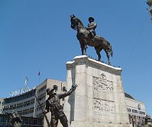

Turkey
Mustafa Kemal Atatürk is commemorated by many memorials throughout Turkey, such as the Atatürk International Airport in Istanbul, the Atatürk Bridge over the Golden Horn (Haliç), the Atatürk Dam, and Atatürk Stadium. Atatürk statues have been erected in all Turkish cities by Turkish Government, and most towns have their own memorial to him. His face and name are seen and heard everywhere in Turkey; his portrait can be seen in public buildings, in schools, on all Turkish lira banknotes, and in the homes of many Turkish families. At the exact time of his death, on every 10 November, at 09:05 am, most vehicles and people in the country's streets pause for one minute in remembrance.
In 1951, the Democrat Party-controlled Turkish parliament led by Prime Minister Adnan Menderes (despite being the conservative opposition to Atatürk's own Republican People's Party) issued a law (5816) outlawing insults to his memory (Turkish: hatırasına alenen hakaret) or destruction of objects representing him. The demarcation between a criticism and an insult was defined as a political argument and the Minister of Justice (a political position) was assigned in Article 5 to execute the law rather than the public prosecutor. A government website was created to denounce the websites that violate this law.
In 2007, YouTube, Geocities, and several blogger webpages were blocked by a Turkish court due to the violation of this law. The YouTube ban in the country lasted for 30 months, in retaliation for four videos on Atatürk. These videos alleged that Atatürk was a Freemason, and was a homosexual, citing a book printed in Belgium on this subject that is currently banned in Turkey. In the last week of October 2010, a German company, following a request from the Turkish Internet Board, exploited YouTube automatic copyright-enforcement mechanism to take down the videos. On 30 October, shortly after the removal, a court lifted the ban. But a few days later, Google concluded that the videos did not infringe copyright and restored them on YouTube.
In 2010, the French-based NGO Reporters Without Borders objected to the Turkish laws to protect the memory of Kemal Atatürk, saying they are in contradiction with the current European Union standards of freedom of speech in news media.